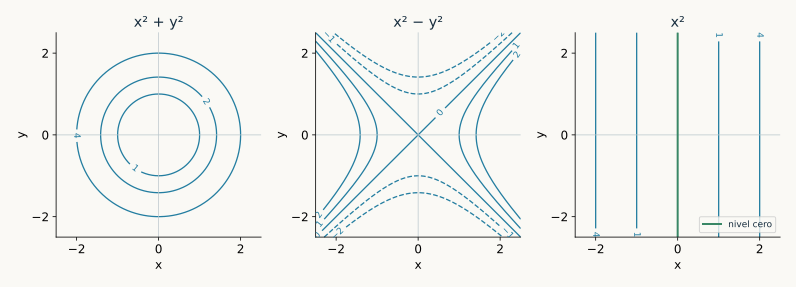
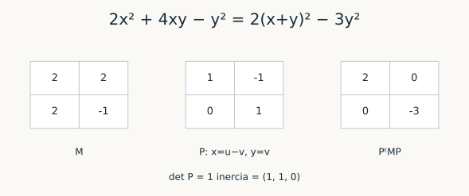
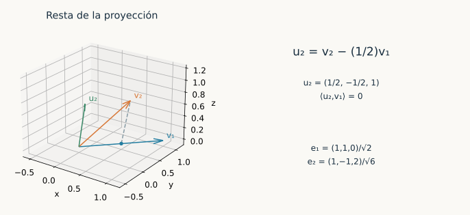
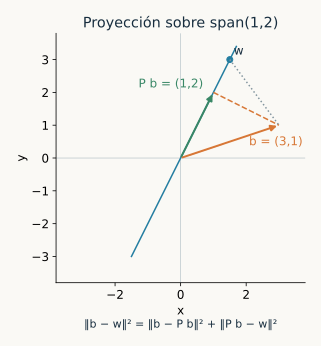
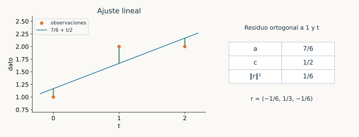
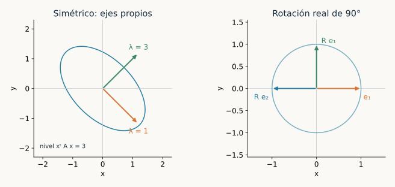
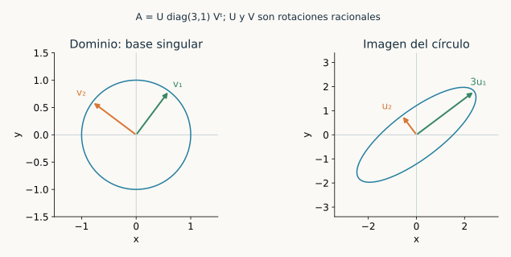
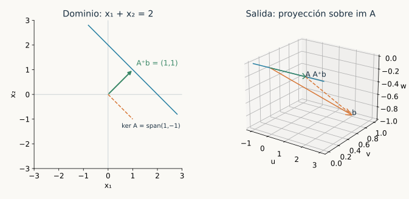
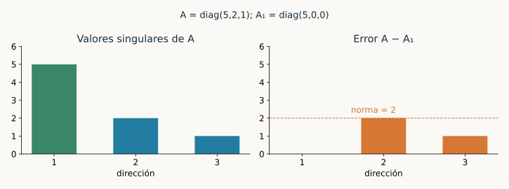
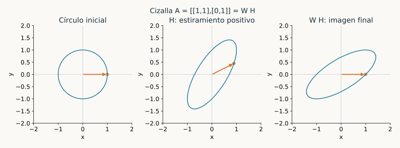

Capítulo 20. Formas bilineales, productos internos y teoremas espectrales
Álgebra para matemáticos · Tomo II
← Capítulo 19 · Índice del tomo II · Obra completa
La expresión \(2x^2+4xy-y^2\) mezcla dos coordenadas. Al escribirla como \(2(x+y)^2-3y^2\), aparecen dos contribuciones de signo opuesto: la mezcla puede desaparecer al cambiar coordenadas, pero la diferencia entre esas dos direcciones permanece. En cambio, para medir longitudes necesitamos una expresión que sea positiva en cada vector no nulo. La posibilidad de escoger coordenadas que respeten esas mediciones dará una precisión nueva a las descomposiciones de los capítulos anteriores.
Una matriz de un operador transforma una entrada; una matriz de una forma recibe dos entradas y produce un escalar. Esas funciones distintas explican sus distintas reglas de cambio de base. Después de estudiar las formas, fijaremos una medición positiva y construiremos bases ortonormales, proyecciones y aproximaciones. Los adjuntos expresarán cómo trasladar un operador de una entrada del producto interno a la otra. El teorema espectral y la descomposición en valores singulares mostrarán hasta dónde se puede simplificar una transformación conservando esa geometría.

El capítulo se organiza en cuatro unidades de lectura. En todo el capítulo los espacios serán de dimensión finita. En la primera unidad trabajamos sobre un cuerpo conmutativo, indicando cada restricción de característica; desde la segunda, el cuerpo será \(\mathbb R\) o \(\mathbb C\). Sobre \(\mathbb C\), el producto interno será lineal en la primera entrada y conjugado lineal en la segunda. Para matrices escribiremos \(A^\dagger=\overline A^{\mathsf T}\); reservamos \(T'\) para el dual algebraico de C19, \(T^*\) para el adjunto y \(A^+\) para la pseudoinversa. La existencia de raíces de polinomios complejos conserva el estatuto de resultado externo admitido del TFA en T1, §26.15. Las demostraciones espectrales no usan cálculo ni un argumento de máximos sobre conjuntos compactos.
Primera unidad. Formas y cambios simultáneos de coordenadas
20.1. Dos entradas y una matriz
Definición 20.1. Una forma bilineal sobre \(V\) es una aplicación \(B:V\times V\to\mathbb F\) lineal en cada entrada al fijar la otra. Es simétrica si \(B(v,w)=B(w,v)\) y alternante si \(B(v,v)=0\) para todo \(v\). Sus radicales izquierdo y derecho son, respectivamente, los conjuntos de vectores que anulan toda segunda entrada y toda primera entrada. La forma es no degenerada si ambos radicales son cero.
Fijada una base \((e_1,\ldots,e_n)\), pongamos \(M_{ij}=B(e_i,e_j)\). Si \(x,y\) son las columnas de coordenadas de \(v,w\), la bilinealidad da \(B(v,w)=\sum_{i,j}x_iM_{ij}y_j=x^{\mathsf T}My\). Recíprocamente, cualquier matriz \(M\) define así una forma. El espacio de todas las formas tiene dimensión \(n^2\): sus valores en los \(n^2\) pares de vectores de la base son libres.
Proposición 20.1 (congruencia y radicales). Si \(P\) convierte coordenadas nuevas en antiguas, la matriz de la forma en la nueva base es \(P^{\mathsf T}MP\). El radical izquierdo tiene coordenadas \(\ker M^{\mathsf T}\) y el derecho, \(\ker M\). Ambos tienen dimensión \(n-\operatorname{rg}M\). En particular, la forma es no degenerada si y sólo si \(M\) es invertible.
Demostración. Sustituir \(x=Px'\) e \(y=Py'\) en \(x^{\mathsf T}My\) produce \(x'^{\mathsf T}P^{\mathsf T}MPy'\), que prueba la primera afirmación. Un vector de coordenadas \(x\) está en el radical izquierdo si \(x^{\mathsf T}My=0\) para todo \(y\), equivalencia que se comprueba en las columnas usuales y da \(M^{\mathsf T}x=0\). Análogamente, la condición para el derecho es \(My=0\). C19 iguala los rangos de una matriz y su transpuesta; rango–nulidad da las dimensiones. \(\square\)
La transformación \(M\mapsto P^{\mathsf T}MP\) se llama congruencia. Se cambia a la vez la base de ambas entradas. Para un operador, en cambio, la regla era \(A\mapsto P^{-1}AP\). La semejanza conserva la acción de un operador; la congruencia conserva los valores de una forma al cambiar la descripción de sus dos argumentos.
20.2. Recuperar una forma desde su diagonal
Definición 20.2. Para una forma simétrica \(B\), su forma cuadrática asociada es \(q(v)=B(v,v)\). Cuando la característica es distinta de dos, estudiaremos las formas cuadráticas mediante esta correspondencia con las formas bilineales simétricas.
Proposición 20.2 (polarización). Si \(\operatorname{car}\mathbb F\ne2\) y \(B\) es simétrica, entonces
\[ B(v,w)=\frac{q(v+w)-q(v)-q(w)}2. \]
Para una forma bilineal cualquiera, \(B(v,v)\) sólo depende de su parte simétrica \((B(v,w)+B(w,v))/2\).
Demostración. Expandir \(B(v+w,v+w)\) da \(q(v)+q(w)+B(v,w)+B(w,v)\). La simetría convierte los dos últimos términos en \(2B(v,w)\), y se puede dividir por dos. Para la segunda afirmación, las partes simétrica y antisimétrica suman \(B\), y la segunda vale cero cuando sus dos argumentos coinciden. \(\square\)
La restricción de característica tiene contenido. Sobre \(\mathbb F_2\), la matriz \(\begin{pmatrix}0&1\\1&0\end{pmatrix}\) define una forma simétrica no nula cuya diagonal \(B(v,v)\) es siempre cero. Además, el polinomio cuadrático formal \(xy\) no tiene representación \(x^{\mathsf T}Mx\) mediante una matriz simétrica de orden dos en característica dos: los términos cruzados se cancelarían. El tratamiento general de formas cuadráticas en esa característica requiere conservar datos adicionales; aquí no se aplicará allí la polarización anterior.
Teorema 20.3 (diagonalización por congruencia). Sobre un cuerpo de característica distinta de dos, toda forma bilineal simétrica admite una base en la que su matriz es diagonal.
Demostración. Inducimos sobre la dimensión. Si la forma es cero, cualquier base sirve; esto incluye el espacio cero. Si no es cero, 20.2 garantiza algún \(v\) con \(B(v,v)\ne0\), pues de lo contrario la polarización anularía toda la forma. Para cualquier \(w\), pongamos
\[ w_0=w-\frac{B(w,v)}{B(v,v)}v. \]
Se cumple \(B(w_0,v)=0\). Así \(V=\mathbb Fv+W\), donde \(W=\{u:B(u,v)=0\}\). La suma es directa porque \(av\in W\) implica \(aB(v,v)=0\) y, por tanto, \(a=0\). La simetría hace que ambas entradas sean ortogonales entre esos sumandos. La restricción a \(W\) es simétrica y \(\dim W=n-1\); por inducción posee una base diagonal. Anteponer \(v\) da la base buscada. La posible degeneración de la restricción no afecta a la inducción. \(\square\)
En el ejemplo inicial, \(M=\begin{pmatrix}2&2\\2&-1\end{pmatrix}\) y las nuevas coordenadas son \(u=x+y\), \(v=y\). La matriz que devuelve las antiguas es \(P=\begin{pmatrix}1&-1\\0&1\end{pmatrix}\), y \(P^{\mathsf T}MP=\operatorname{diag}(2,-3)\). Las trazas son uno y menos uno, respectivamente: estas matrices congruentes no son semejantes. El cambio ha simplificado la forma que describen, sin afirmar que representen el mismo operador.

20.3. Cuántas direcciones son positivas
Teorema 20.4 (ley de inercia real). Toda forma simétrica real admite matriz \(\operatorname{diag}(I_p,-I_q,0_z)\), donde \(p+q+z=n\). Los tres números están determinados por la forma. Dos formas reales son congruentes si y sólo si tienen el mismo triple \((p,q,z)\).
Demostración. Por 20.3 se obtiene una matriz diagonal. Cada entrada no nula \(d\) se normaliza a su signo dividiendo el vector correspondiente por \(\sqrt{|d|}\). Ordenar positivos, negativos y ceros produce la matriz anunciada. El número \(z\) es la dimensión del radical por 20.1.
Para fijar \(p\) sin depender de la base, consideremos cualquier subespacio \(L\) donde la forma sea positiva definida. Su proyección sobre las primeras \(p\) coordenadas es inyectiva: un vector no nulo de \(L\) con todas esas coordenadas cero tendría valor cuadrático no positivo, contradicción. Así \(\dim L\leq p\). Las primeras \(p\) direcciones alcanzan esa dimensión, por lo que \(p\) es el máximo de las dimensiones de subespacios positivos. Aplicar el mismo argumento a \(-B\) fija \(q\). Estos máximos y el radical se preservan mediante un cambio de base. Finalmente, dos formas con el mismo triple se reducen a la misma matriz, lo que da una congruencia entre ellas. \(\square\)
Un vector no nulo con \(q(v)=0\) se llama isótropo. No tiene por qué pertenecer al radical. En \(q(x,y)=x^2-y^2\), el vector \((1,1)\) es isótropo, pero el radical es cero. La anulación en una sola entrada diagonal debe distinguirse de anular el emparejamiento con todos los vectores.
20.4. Formas alternantes
De \(B(v+w,v+w)=0\) para una forma alternante se deduce \(B(v,w)=-B(w,v)\), sobre cualquier cuerpo. En característica dos esto implica simetría, pero sigue siendo necesario exigir diagonal cero. Un bloque alternante básico es \(\begin{pmatrix}0&1\\-1&0\end{pmatrix}\).
Teorema 20.5 (pares alternantes). Toda forma alternante de dimensión finita, en cualquier característica, admite una matriz diagonal por bloques formada por bloques \(\begin{pmatrix}0&1\\-1&0\end{pmatrix}\) y un bloque cero. Su rango es par. Si es no degenerada, la dimensión es par.
Demostración. Si \(B\ne0\), elijamos \(e,f\) con \(B(e,f)=1\), normalizando uno de los vectores. Son independientes: evaluar una relación en \(e\) y en \(f\) anula sus dos coeficientes. En \(H=\operatorname{span}(e,f)\) la forma tiene el bloque anunciado y es no degenerada.
Para cualquier \(w\), el vector \(w_H=B(w,f)e-B(w,e)f\) pertenece a \(H\), y \(w-w_H\) se anula al emparejarlo con \(e\) y con \(f\). La identidad \(B(f,e)=-1\) verifica ambas cancelaciones incluso en característica dos. Por tanto, \(V=H\oplus H^{\perp_B}\), donde el segundo sumando anula todo \(H\); la suma es directa por la no degeneración en \(H\). La restricción restante es alternante y se repite el argumento en dimensión menor. Cuando la restricción es cero, su espacio aporta el bloque cero y queda en el radical de toda la forma. Cada bloque no nulo tiene rango dos, lo que prueba las dos afirmaciones finales. \(\square\)
20.5. El caso hermitiano
Definición 20.3. Una forma hermitiana sobre un espacio complejo es una aplicación \(h\) lineal en la primera entrada, conjugado lineal en la segunda y tal que \(h(v,w)=\overline{h(w,v)}\). Representaremos esta forma por \(H_{ij}=h(e_j,e_i)\); así \(h(v,w)=y^\dagger Hx\). Con esta convención, \(H^\dagger=H\) y el cambio de base es \(H\mapsto P^\dagger HP\).
El orden de los índices se ha elegido para conservar la fórmula habitual con columnas y conjugación. En particular, \(h(v,v)=x^\dagger Hx\) es real. Para una forma bilineal se conserva la convención de §20.1, sin conjugación.
Teorema 20.6 (polarización e inercia hermitianas). Una forma hermitiana queda determinada por \(q(v)=h(v,v)\) mediante
\[ h(v,w)=\tfrac14\bigl(q(v+w)-q(v-w)+i q(v+iw)-i q(v-iw)\bigr). \]
Admite por congruencia hermitiana una matriz \(\operatorname{diag}(I_p,-I_q,0_z)\) con triple único de dimensiones complejas.
Demostración. Si \(a=h(v,w)\), las dos primeras evaluaciones tienen diferencia \(4\operatorname{Re}a\). Las dos últimas tienen diferencia \(4\operatorname{Im}a\): los términos cruzados de \(q(v+iw)\) son \(-ia+i\overline a=2\operatorname{Im}a\). Esto prueba la fórmula y muestra que una forma no nula posee algún \(v\) con \(q(v)\ne0\).
Para ese vector, \(q(v)\) es real y no nulo. La resta \(w-h(w,v)v/q(v)\) es ortogonal a \(v\) por linealidad en la primera entrada. La simetría hermitiana hace ortogonales ambos órdenes. La inducción de 20.3 funciona con esta resta y produce una diagonal real. Se normalizan sus entradas con raíces positivas reales. El argumento de máxima dimensión positiva de 20.4 se aplica ahora a subespacios complejos: una proyección compleja inyectiva acota su dimensión por \(p\). Análogamente se fija \(q\), y \(z\) es la dimensión del radical. La fórmula de cambio de base resulta de sustituir \(x=Px'\), \(y=Py'\) en \(y^\dagger Hx\). \(\square\)
Segunda unidad. Geometría ortogonal y aproximación
20.6. Una medición positiva de longitud
Definición 20.4. Sobre \(\mathbb R\), un producto interno es una forma bilineal simétrica positiva definida; sobre \(\mathbb C\), una forma hermitiana positiva definida. Escribiremos \(\langle v,w\rangle\) y definiremos \(\|v\|=\sqrt{\langle v,v\rangle}\). En coordenadas usuales, \(\langle x,y\rangle=y^\dagger x\).
La positividad hace que \(\|v\|=0\) equivalga a \(v=0\). Además \(\|av\|=|a|\|v\|\). Si \(\langle v,w\rangle=0\), la expansión del cuadrado da \(\|v+w\|^2=\|v\|^2+\|w\|^2\). Esta identidad de Pitágoras será la herramienta para construir aproximaciones sin recurrir a derivadas.
Teorema 20.7 (Cauchy–Schwarz y norma). Para todos \(v,w\),
\[ |\langle v,w\rangle|\leq\|v\|\|w\|,\qquad \|v+w\|\leq\|v\|+\|w\|. \]
En la primera desigualdad hay igualdad si y sólo si \(v,w\) son dependientes. Así \(\|\cdot\|\) es una norma.
Demostración. Si \(w=0\), la primera afirmación y su caso de igualdad son inmediatos. Si \(w\ne0\), escribamos \(v=aw+u\), donde \(a=\langle v,w\rangle/\|w\|^2\). La resta define \(u\) con \(\langle u,w\rangle=0\). Pitágoras da \(\|v\|^2=|\langle v,w\rangle|^2/\|w\|^2+\|u\|^2\), que prueba la desigualdad. Hay igualdad exactamente cuando \(u=0\), es decir, cuando \(v\) es múltiplo de \(w\).
Finalmente, \(\|v+w\|^2=\|v\|^2+2\operatorname{Re}\langle v,w\rangle+\|w\|^2\). Acotar la parte real por el módulo y aplicar la primera desigualdad da \((\|v\|+\|w\|)^2\). Tomar raíces no negativas prueba la desigualdad triangular. Junto con las dos propiedades ya comprobadas, son los axiomas de norma. \(\square\)
20.7. Construir direcciones ortonormales
Definición 20.5. Dos vectores son ortogonales si su producto interno es cero. Una lista es ortonormal si \(\langle e_i,e_j\rangle=\delta_{ij}\). Para un subespacio \(W\), su complemento ortogonal es \(W^\perp=\{v:\langle v,w\rangle=0\text{ para todo }w\in W\}\).
Una lista ortonormal es independiente: evaluar una relación en su vector \(j\) extrae el coeficiente \(j\). Sus coeficientes se leen como \(\langle v,e_j\rangle\), lo que conserva el sentido de la primera entrada lineal.
Teorema 20.8 (Gram–Schmidt). Para una lista independiente \((v_1,\ldots,v_k)\), las reglas
\[ u_j=v_j-\sum_{i<j}\langle v_j,e_i\rangle e_i,\qquad e_j=u_j/\|u_j\| \]
producen una lista ortonormal con los mismos subespacios generados iniciales. Toda lista ortonormal puede ampliarse a una base ortonormal.
Demostración. Supongamos construidos los primeros \(j-1\) vectores. Evaluar \(u_j\) en \(e_l\) para \(l<j\) da cero: en la suma sobrevive exactamente el término que resta \(\langle v_j,e_l\rangle\). Además \(u_j\ne0\), pues de ser cero \(v_j\) pertenecería al generado de los anteriores, que por inducción coincide con el de \(v_1,\ldots,v_{j-1}\). Por tanto se puede dividir por su norma. El vector \(e_j\) tiene norma uno y es ortogonal a los anteriores. La fórmula expresa cada nuevo vector en el generado inicial y permite recuperar \(v_j\) a partir de él y los anteriores; los generados coinciden.
Para ampliar una lista ortonormal, ampliémosla primero a una base por C07 y apliquemos el procedimiento. Los vectores iniciales quedan intactos, porque ya son ortogonales y tienen norma uno. \(\square\)
Para \(v_1=(1,1,0)\) y \(v_2=(1,0,1)\) en \(\mathbb R^3\), se obtiene \(u_1=v_1\) y \(u_2=(1/2,-1/2,1)\). La lista resultante es \(e_1=(1,1,0)/\sqrt2\), \(e_2=(1,-1,2)/\sqrt6\). Se ha restado la componente de \(v_2\) en la primera dirección, conservando el plano generado.

20.8. Proyectar y medir el error
Teorema 20.9 (descomposición y mejor aproximación). Si \((e_1,\ldots,e_k)\) es una base ortonormal de \(W\), entonces
\[ P_Wv=\sum_{j=1}^k\langle v,e_j\rangle e_j, \qquad V=W\oplus W^\perp. \]
El operador \(P_W\) es lineal, tiene imagen \(W\), núcleo \(W^\perp\) y cumple \(P_W^2=P_W\). Para \(w\in W\),
\[ \|v-w\|^2=\|v-P_Wv\|^2+\|P_Wv-w\|^2. \]
Por ello \(P_Wv\) es la única mejor aproximación a \(v\) en \(W\).
Demostración. La resta \(v-P_Wv\) se anula al emparejarla con cada \(e_j\), luego pertenece a \(W^\perp\). Si un vector está en \(W\cap W^\perp\), es ortogonal a sí mismo y debe ser cero. Esto prueba suma directa y unicidad; también demuestra que la fórmula no depende de la base ortonormal elegida. La linealidad procede de la primera entrada del producto, y sobre \(W\) la fórmula recupera el propio vector. De ahí se leen imagen, núcleo e idempotencia.
En la descomposición \(v-w=(v-P_Wv)+(P_Wv-w)\), los dos sumandos son ortogonales. Pitágoras da la identidad de error. El segundo término cuadrático se anula exactamente cuando \(w=P_Wv\), lo que prueba existencia y unicidad del mínimo. \(\square\)
También se obtiene \(\dim W^\perp=n-\dim W\) y \((W^\perp)^\perp=W\): hay inclusión de \(W\) en el segundo espacio y sus dimensiones coinciden. La identidad \(\|v\|^2=\sum_j|\langle v,e_j\rangle|^2+\|v-P_Wv\|^2\) da la desigualdad de Bessel. Si la lista es una base de \(V\), el residuo es cero y resulta la identidad de Parseval.

20.9. Una factorización que registra la ortogonalización
Teorema 20.10 (QR reducido). Si \(A\in\mathbb F^{m\times n}\) tiene columnas independientes, entonces \(m\geq n\) y existe una factorización única \(A=QR\), donde \(Q\in\mathbb F^{m\times n}\) satisface \(Q^\dagger Q=I_n\) y \(R\in\mathbb F^{n\times n}\) es triangular superior con diagonal real positiva.
Demostración. Apliquemos 20.8 a las columnas de \(A\). Cada columna \(a_j\) es combinación de \(q_1,\ldots,q_j\), de modo que los coeficientes forman una matriz triangular superior. El coeficiente diagonal es \(\|u_j\|>0\) y los anteriores son \(\langle a_j,q_i\rangle\). Así \(A=QR\) y las columnas ortonormales dan \(Q^\dagger Q=I_n\).
Si también \(A=\widetilde Q\widetilde R\) con esas propiedades, ambas listas ortonormales generan la imagen de \(A\). La matriz \(C=Q^\dagger\widetilde Q=R\widetilde R^{-1}\) es triangular superior y satisface \(C^\dagger C=I\): sus columnas son las coordenadas de una base ortonormal en otra base ortonormal de la misma imagen. Su primera columna sólo tiene la entrada inicial; norma uno y ortogonalidad de columnas anulan el resto de la primera fila. Repetir en el bloque restante muestra que \(C\) es diagonal con entradas de módulo uno. Su diagonal es además positiva, por ser cociente de las diagonales de \(R\) y \(\widetilde R\). Por tanto \(C=I\), y las dos factorizaciones coinciden. \(\square\)
Para las dos columnas del ejemplo de §20.7,
\[ Q=\begin{pmatrix}1/\sqrt2&1/\sqrt6\\1/\sqrt2&-1/\sqrt6\\0&2/\sqrt6\end{pmatrix},\qquad R=\begin{pmatrix}\sqrt2&1/\sqrt2\\0&\sqrt{3/2}\end{pmatrix}. \]
Las identidades \(Q^\dagger Q=I\) y \(QR=A\) verifican el proceso. Si hay dependencia entre columnas, algún residuo de Gram–Schmidt puede ser cero y esta versión de QR con diagonal positiva no se aplica.
20.10. Sistemas que admiten una mejor aproximación
Teorema 20.11 (mínimos cuadrados). Para cualquier matriz \(A\) y vector \(b\), existen vectores que minimizan \(\|Ax-b\|\). Son exactamente las soluciones de las ecuaciones normales \(A^\dagger Ax=A^\dagger b\). Sus imágenes son el único vector \(P_{\operatorname{im}A}b\). El minimizador \(x\) es único si y sólo si las columnas de \(A\) son independientes. En ese caso,
\[ x=(A^\dagger A)^{-1}A^\dagger b, \qquad Rx=Q^\dagger b\quad\text{si }A=QR. \]
Demostración. Por 20.9, la mejor aproximación a \(b\) en la imagen de \(A\) existe y es su proyección. Al pertenecer a la imagen, tiene alguna preimagen \(x\). El residuo \(r=b-Ax\) es ortogonal a todas las columnas exactamente cuando \(A^\dagger r=0\), que da las ecuaciones normales. Dos preimágenes de la misma proyección difieren en \(\ker A\), por lo que la unicidad equivale a núcleo cero.
La identidad \(x^\dagger A^\dagger Ax=\|Ax\|^2\) muestra \(\ker(A^\dagger A)=\ker A\). Si las columnas son independientes, la matriz cuadrada \(A^\dagger A\) es invertible y se obtiene la primera fórmula. Sustituir \(A=QR\) en las ecuaciones normales da \(R^\dagger Rx=R^\dagger Q^\dagger b\); cancelar la matriz invertible \(R^\dagger\) da la segunda. \(\square\)
Por ejemplo, para \(A=\begin{pmatrix}1&0\\1&1\\1&2\end{pmatrix}\) y \(b=(1,2,2)\), las ecuaciones normales son \(3a+3c=5\), \(3a+5c=6\). Resulta \((a,c)=(7/6,1/2)\), con ajuste \((7/6,5/3,13/6)\) y residuo \((-1/6,1/3,-1/6)\). El residuo es ortogonal a ambas columnas y su norma cuadrada es \(1/6\).

20.11. Representar funcionales usando el producto interno
Teorema 20.12 (representación de Riesz finita). Para cada funcional lineal \(f\) existe un único \(y\) tal que \(f(x)=\langle x,y\rangle\) para todo \(x\). En una base ortonormal \((e_j)\),
\[ y=\sum_j\overline{f(e_j)}e_j. \]
La correspondencia \(y\mapsto\langle\,\cdot\,,y\rangle\) es lineal sobre \(\mathbb R\) y conjugado lineal sobre \(\mathbb C\).
Demostración. La fórmula propuesta da \(\langle e_i,y\rangle=f(e_i)\), pues el producto conjuga el coeficiente de su segunda entrada. Los dos funcionales coinciden en una base y, por tanto, en todo el espacio. Si dos representantes \(y,z\) producen el mismo funcional, se tiene \(\langle x,y-z\rangle=0\) para todo \(x\); tomando \(x=y-z\) se obtiene \(y=z\). Finalmente, sustituir \(ay+bz\) en la segunda entrada conjuga los escalares, lo que prueba la última afirmación. \(\square\)
En C19 se distinguió la evaluación canónica en el bidual de una identificación de \(V\) con \(V^*\). Este teorema aporta esa identificación una vez elegido un producto interno y precisa su conjugación compleja. Para \(f(z_1,z_2)=z_1+iz_2\) con el producto usual, el representante es \((1,-i)\): \(\langle z,(1,-i)\rangle=z_1+iz_2\).
Tercera unidad. Adjuntos y teoremas espectrales
20.12. Trasladar el operador entre las dos entradas
Definición 20.6. Para \(T:V\to W\) entre espacios con producto interno, su adjunto es la aplicación \(T^*:W\to V\) que satisface \(\langle Tx,y\rangle_W=\langle x,T^*y\rangle_V\) para todo \(x,y\). Un operador es autoadjunto si \(T=T^*\) y normal si \(T^*T=TT^*\).
Teorema 20.13 (existencia y matriz del adjunto). El adjunto existe, es único y es lineal. En bases ortonormales, si \(T\) tiene matriz \(A\), su adjunto tiene matriz \(A^\dagger\). En bases arbitrarias, con matrices de Gram \(\Gamma_V=(\langle e_j,e_i\rangle)\) y \(\Gamma_W=(\langle f_j,f_i\rangle)\), su matriz es \(\Gamma_V^{-1}A^\dagger\Gamma_W\).
Demostración. Para \(y\) fijo, la regla \(x\mapsto\langle Tx,y\rangle\) es un funcional lineal. Por 20.12 tiene un representante único en \(V\); llamémoslo \(T^*y\). Para \(ay+bz\), el funcional resultante es \(\overline a\langle Tx,y\rangle+\overline b\langle Tx,z\rangle\), representado por \(aT^*y+bT^*z\). La unicidad muestra que \(T^*\) es lineal.
En las bases arbitrarias, el producto se escribe \(\langle x,y\rangle=y^\dagger\Gamma x\). Estas matrices de Gram son hermitianas positivas definidas: para una columna no nula, su valor cuadrático es la norma cuadrada del vector representado, que es positiva. Son invertibles, porque un vector en el núcleo tendría norma cero. Si \(C\) es la matriz del adjunto, su identidad definitoria exige \(y^\dagger\Gamma_W Ax=y^\dagger C^\dagger\Gamma_Vx\) para todos \(x,y\), es decir, \(\Gamma_W A=C^\dagger\Gamma_V\). Al conjugar y transponer se obtiene \(C=\Gamma_V^{-1}A^\dagger\Gamma_W\). En bases ortonormales ambas matrices de Gram son identidades. La fórmula o la unicidad de los representantes prueba la unicidad del adjunto. \(\square\)
El dual algebraico de C19 recibe funcionales; el adjunto recibe vectores y usa productos internos. Si \(T(z)=iz\) en \(\mathbb C\), el dual tiene matriz \((i)\) en las bases duales, mientras el adjunto tiene matriz \((-i)\) en la base ortonormal usual. La conjugación responde a la identidad que define al adjunto.
20.13. Núcleos, imágenes y productos de adjuntos
Proposición 20.14. Para composiciones bien definidas se cumple \((ST)^*=T^*S^*\), \((aT+bS)^*=\overline aT^*+\overline bS^*\) y \((T^*)^*=T\). Además,
\[ \ker T^*=(\operatorname{im}T)^\perp,\qquad \operatorname{im}T^*=(\ker T)^\perp,\qquad \ker(T^*T)=\ker T. \]
Demostración. La identidad \(\langle STx,z\rangle=\langle Tx,S^*z\rangle=\langle x,T^*S^*z\rangle\) prueba la primera regla por unicidad. Para los escalares se trasladan de la primera a la segunda entrada conjugándolos; sumar las identidades da la segunda. La simetría hermitiana aplicada a la identidad del adjunto muestra que \(T\) es adjunto de \(T^*\), lo que prueba la tercera regla.
Un vector \(y\) pertenece a \(\ker T^*\) exactamente cuando \(\langle x,T^*y\rangle=0\) para todo \(x\), equivalencia que se verifica tomando \(x=T^*y\). Por la identidad del adjunto, esto significa \(y\perp\operatorname{im}T\). Aplicar el mismo resultado a \(T^*\) y tomar complementos ortogonales dobles da la segunda igualdad. Por último, \(\langle T^*Tx,x\rangle=\|Tx\|^2\), así que \(T^*Tx=0\) implica \(Tx=0\); la recíproca es inmediata. \(\square\)
La primera igualdad y 20.9 dan \(\operatorname{rg}T^*=\operatorname{rg}T\). Un proyector idempotente es ortogonal exactamente cuando es autoadjunto. Para verlo, la proyección de 20.9 satisface la identidad del adjunto al separar las dos componentes ortogonales. Recíprocamente, si \(P^2=P=P^*\), un vector de su imagen es ortogonal a todo vector de su núcleo, pues \(\langle Px,z\rangle=\langle x,Pz\rangle=0\). La descomposición de C11 entre imagen y núcleo es entonces ortogonal.
20.14. Transformaciones que conservan el producto interno
Una aplicación lineal que conserva normas se llama isometría. Un operador \(U:V\to V\) se llama unitario si \(U^*U=UU^*=I\); sobre espacios reales también se dice ortogonal. La definición de isometría permite un codominio de dimensión mayor.
Proposición 20.15. Una aplicación \(T:V\to W\) es una isometría si y sólo si \(T^*T=I_V\). En ese caso conserva productos internos y es inyectiva. Un operador de dimensión finita es una isometría si y sólo si es unitario.
Demostración. La identidad \(T^*T=I\) da \(\langle Tx,Ty\rangle=\langle x,y\rangle\) y, en particular, igualdad de normas. En la otra dirección, si conserva normas, se conservan las formas cuadráticas del producto interno. Sobre \(\mathbb R\), la polarización de 20.2 recupera el producto; sobre \(\mathbb C\), lo hace 20.6. Así \(\langle Tx,Ty\rangle=\langle x,y\rangle\) para todos \(x,y\), lo que fuerza \(T^*T=I\) por no degeneración. La norma de una imagen sólo puede ser cero si la entrada es cero, de modo que \(T\) es inyectiva. Para un operador finito es entonces invertible, y \(T^*T=I\) implica \(T^*=T^{-1}\), que también da \(TT^*=I\). \(\square\)
20.15. Triangularizar conservando longitudes
Teorema 20.16 (Schur complejo). Todo operador sobre un espacio complejo de dimensión finita tiene una matriz triangular superior en alguna base ortonormal.
Demostración. Inducimos sobre la dimensión, con la base vacía para dimensión cero. En dimensión positiva, el TFA admitido en T1 y C14 proporcionan un vector propio. Lo normalizamos como \(e_1\) y lo ampliamos a una base ortonormal. La invariancia de su recta hace que la matriz sea \(\begin{pmatrix}\lambda&C\\0&B\end{pmatrix}\).
El bloque \(B\) representa un operador sobre \(e_1^\perp\): primero se aplica \(T\) y luego se proyecta sobre ese subespacio. Esa compresión es lineal, aunque el complemento no sea invariante. Por inducción, un cambio ortonormal dentro del complemento triangulariza \(B\). Extenderlo dejando fijo \(e_1\) triangulariza toda la matriz y conserva ortonormalidad. \(\square\)
20.16. Cuándo la base ortonormal puede ser propia
Teorema 20.17 (espectral complejo). Un operador complejo es normal si y sólo si posee una base ortonormal de vectores propios. Es autoadjunto exactamente cuando es normal y todos sus valores propios son reales; es unitario exactamente cuando es normal y todos sus valores propios tienen módulo uno.
Demostración. Si es normal, apliquemos 20.16 y escribamos su matriz triangular superior \(A\). Comparar la entrada \((1,1)\) de \(A^\dagger A\) y \(AA^\dagger\) da
\[ |a_{11}|^2=|a_{11}|^2+\sum_{j>1}|a_{1j}|^2. \]
Todos los términos de la suma son no negativos, luego \(a_{1j}=0\) para \(j>1\). Queda una suma de un bloque escalar y un bloque triangular menor, que sigue siendo normal al comparar los productos por bloques. La inducción anula todas las entradas fuera de la diagonal. Recíprocamente, una matriz diagonal conmuta con su conjugada transpuesta; un cambio de base ortonormal conserva la identidad de normalidad.
En la base propia ortonormal, ser autoadjunto equivale a \(\lambda=\overline\lambda\) en cada entrada, y ser unitario equivale a \(|\lambda|^2=1\). Los autoadjuntos y los unitarios son normales por sus identidades definitorias, de modo que las equivalencias son completas. \(\square\)
Teorema 20.18 (espectral real). Un operador real es autoadjunto si y sólo si posee una base ortonormal real de vectores propios. En particular, toda matriz simétrica real admite \(A=QDQ^{\mathsf T}\) con \(Q\) ortogonal y \(D\) diagonal real.
Demostración. Escojamos primero una base ortonormal real. Si el operador es autoadjunto, su matriz real \(A\) es simétrica. Estudiada sobre \(\mathbb C\), sigue siendo hermitiana. Tiene un valor propio por el TFA admitido; ese valor es real, pues para un vector propio complejo \(z\ne0\) la identidad \(\langle Az,z\rangle=\langle z,Az\rangle\) da \(\lambda\|z\|^2=\overline\lambda\|z\|^2\).
Escribamos \(z=x+iy\) con \(x,y\) reales. Como \(A\) y \(\lambda\) son reales, \(Ax=\lambda x\) y \(Ay=\lambda y\). Al menos uno de esos vectores es no nulo. Normalizarlo da un vector propio real \(e\). Su complemento ortogonal es invariante: para \(w\perp e\), se tiene \(\langle Tw,e\rangle=\langle w,Te\rangle=0\). La restricción sigue siendo autoadjunta. Por inducción posee una base ortonormal propia y, al añadir \(e\), se obtiene la de todo el espacio. La recíproca resulta de que una diagonal real coincide con su adjunto en una base ortonormal. \(\square\)
Por ejemplo, \(A=\begin{pmatrix}2&1\\1&2\end{pmatrix}\) tiene ejes propios ortonormales \((1,1)/\sqrt2\) y \((1,-1)/\sqrt2\), con valores tres y uno. Para su forma cuadrática, la diagonalización ortogonal es además una congruencia, porque \(Q^{-1}=Q^{\mathsf T}\). Una rotación real de un cuarto de vuelta también es normal, pero no tiene valores propios reales: la normalidad real, por sí sola, no garantiza una base propia real.

20.17. Positividad y raíces de operadores
Un operador positivo semidefinido será un autoadjunto \(A\) con \(\langle Ax,x\rangle\geq0\) para todo \(x\). Será positivo definido si la desigualdad es estricta para \(x\ne0\). La condición de autoadjunción forma parte de esta definición también sobre \(\mathbb R\).
Teorema 20.19. Un autoadjunto es positivo semidefinido si y sólo si todos sus valores propios son no negativos. Es positivo definido si y sólo si todos son positivos. Todo positivo semidefinido tiene una única raíz cuadrada positiva semidefinida.
Demostración. En una base propia ortonormal, \(\langle Ax,x\rangle=\sum_j\lambda_j|x_j|^2\). Las dos caracterizaciones se leen eligiendo una coordenada por vez y sumando. Definir \(H\) en esa base mediante \(He_j=\sqrt{\lambda_j}e_j\) produce un positivo semidefinido con \(H^2=A\).
Para la unicidad, si \(K\geq0\) y \(K^2=A\), entonces \(K\) conmuta con \(A\), por ser \(A\) su cuadrado. Preserva cada espacio propio \(E_\lambda\) de \(A\). Allí su restricción sigue siendo autoadjunta positiva y tiene una base ortonormal propia. Cada uno de sus valores \(\mu\) satisface \(\mu\geq0\) y \(\mu^2=\lambda\), luego \(\mu=\sqrt\lambda\). Por tanto \(K\) actúa como \(\sqrt\lambda I\) en todo \(E_\lambda\), igual que \(H\). Como esos espacios generan, \(K=H\). \(\square\)
20.18. Varios observables compatibles
Teorema 20.20 (diagonalización ortonormal simultánea). Una familia finita de operadores autoadjuntos que conmutan dos a dos admite una base ortonormal común de vectores propios, sobre \(\mathbb R\) o \(\mathbb C\).
Demostración. Inducimos sobre el número de operadores. Para uno se aplica el teorema espectral. Diagonalicemos el primero; sus espacios propios correspondientes a valores distintos son ortogonales: si \(Tx=\lambda x\), \(Ty=\mu y\), con \(\lambda\ne\mu\), entonces \(\lambda\langle x,y\rangle=\mu\langle x,y\rangle\). Los valores son reales, así que la diferencia no nula obliga a \(\langle x,y\rangle=0\). Cada operador restante preserva esos espacios por conmutación con el primero. Sus restricciones siguen siendo autoadjuntas y conmutan. La inducción da una base ortonormal común en cada espacio propio. Reunirlas produce una base común de todo el espacio. Una familia vacía admite cualquier base ortonormal. \(\square\)
Cuarta unidad. Valores singulares y síntesis de descomposiciones
20.19. Dos bases ortonormales para una matriz rectangular
Los valores propios exigen el mismo espacio de entrada y de salida. Para una transformación rectangular podemos estudiar \(T^*T\), que sí es un operador sobre el dominio y siempre es positivo semidefinido. Su valor cuadrático es \(\|Tx\|^2\), de modo que registra cuánto estira cada dirección.
Definición 20.7. Para \(A\in\mathbb F^{m\times n}\), sus valores singulares positivos son las raíces positivas de los valores propios no nulos de \(A^\dagger A\), con multiplicidades. Los ordenamos como \(\sigma_1\geq\cdots\geq\sigma_r>0\). Cuando usemos una lista matricial completa, se añadirán ceros hasta longitud \(\min(m,n)\). El espectro de \(A^\dagger A\) puede contener ceros adicionales si \(n>m\).
Teorema 20.21 (descomposición en valores singulares). Toda matriz real o compleja admite
\[ A=U\Sigma V^\dagger, \]
con \(U\in\mathbb F^{m\times m}\) y \(V\in\mathbb F^{n\times n}\) unitarias, y \(\Sigma\in\mathbb F^{m\times n}\) diagonal rectangular con sus \(r=\operatorname{rg}A\) valores singulares positivos y ceros en las otras posiciones. Sobre \(\mathbb R\), \(U,V\) son ortogonales. Equivalentemente,
\[ Ax=\sum_{j=1}^r\sigma_j\langle x,v_j\rangle u_j. \]
Demostración. La matriz \(A^\dagger A\) es autoadjunta y \(x^\dagger A^\dagger Ax=\|Ax\|^2\geq0\). El teorema espectral proporciona una base ortonormal \((v_1,\ldots,v_n)\) con \(A^\dagger Av_j=\sigma_j^2v_j\), colocando primero los valores positivos. Para cada uno de ellos definimos \(u_j=Av_j/\sigma_j\). Entonces
\[ \langle u_i,u_j\rangle =\frac{\langle v_i,A^\dagger Av_j\rangle}{\sigma_i\sigma_j} =\frac{\sigma_j^2\delta_{ij}}{\sigma_i\sigma_j}=\delta_{ij}. \]
Para las restantes direcciones, \(\|Av_j\|^2=0\), luego \(Av_j=0\). Así las primeras imágenes son independientes y generan toda la imagen de \(A\); su número es \(r\leq\min(m,n)\). Ampliemos \((u_1,\ldots,u_r)\) a una base ortonormal del codominio. Las matrices de esas bases son \(U,V\), y las igualdades de imágenes por columnas dan \(AV=U\Sigma\). Multiplicar por \(V^\dagger\) prueba la factorización y la expansión. Si \(A=0\), se eligen cualesquiera bases ortonormales y \(\Sigma=0\); las dimensiones cero se interpretan con las matrices vacías correspondientes. \(\square\)
Las listas de valores singulares son determinadas por \(A^\dagger A\). Las bases no lo son: una dirección puede cambiar de fase, y un valor repetido permite elegir otras bases ortonormales dentro de su espacio propio. La factorización usa dos bases, como la equivalencia de C12, y además conserva longitudes en ambas.

Para \(A=\begin{pmatrix}1&1\\0&0\\0&0\end{pmatrix}\), una dirección singular es \(v_1=(1,1)/\sqrt2\), con \(\sigma_1=\sqrt2\) e imagen normalizada \(u_1=(1,0,0)\). La dirección \(v_2=(1,-1)/\sqrt2\) pertenece al núcleo. Este ejemplo rectangular separa la dirección efectiva de la información que se pierde.
20.20. Los cuatro subespacios y dos normas de matrices
Proposición 20.22. En una SVD completa,
\[ \begin{array}{ll} \operatorname{im}A=\operatorname{span}(u_1,\ldots,u_r),& \ker A=\operatorname{span}(v_{r+1},\ldots,v_n),\\ \operatorname{im}A^\dagger=\operatorname{span}(v_1,\ldots,v_r),& \ker A^\dagger=\operatorname{span}(u_{r+1},\ldots,u_m). \end{array} \]
Si \(n>0\), la norma de operador \(\|A\|_2=\max_{\|x\|=1}\|Ax\|\) existe y es \(\sigma_1\) cuando \(r>0\), y cero cuando \(r=0\). La norma de Frobenius satisface \(\|A\|_F^2=\sum_{i,j}|a_{ij}|^2=\sum_{j=1}^r\sigma_j^2\). Ambas son invariantes al multiplicar por matrices unitarias de tamaños adecuados.
Demostración. Las igualdades \(Av_j=\sigma_ju_j\) para \(j\leq r\) y \(Av_j=0\) para \(j>r\) identifican imagen y núcleo. Conjugar y transponer la SVD produce las dos igualdades restantes.
Escribiendo un vector unitario en la base \((v_j)\), obtenemos \(\|Ax\|^2=\sum_{j\leq r}\sigma_j^2|x_j|^2\leq\sigma_1^2\). La igualdad se alcanza en \(v_1\), lo que demuestra la existencia del máximo sin usar compactitud. Para \(A=0\) todo vector unitario da cero. La suma de cuadrados de las entradas es \(\operatorname{tr}(A^\dagger A)\); por invariancia de la traza y diagonalización espectral es la suma de sus valores propios, que son los \(\sigma_j^2\) y los ceros restantes. Las unitarias preservan las normas vectoriales y llevan la esfera unitaria sobre sí misma; esto prueba la primera invariancia. La segunda se sigue de la traza y de \(U^\dagger U=I\). \(\square\)
Para un dominio cero definimos \(\|A\|_2=0\). La norma de operador mide el mayor estiramiento de una dirección unitaria; la de Frobenius suma las energías de las imágenes de una base ortonormal.
20.21. Invertir las direcciones que sobreviven
Definición 20.8. Dada una SVD, formemos \(\Sigma^+\in\mathbb F^{n\times m}\) reemplazando cada \(\sigma_j>0\) por \(1/\sigma_j\) y conservando ceros, con los tamaños intercambiados. La pseudoinversa de Moore–Penrose es \(A^+=V\Sigma^+U^\dagger\).
Teorema 20.23 (caracterización de la pseudoinversa). La matriz \(A^+\) es independiente de la SVD elegida. Es la única \(X\in\mathbb F^{n\times m}\) que cumple
\[ AXA=A,\qquad XAX=X,\qquad (AX)^\dagger=AX,\qquad (XA)^\dagger=XA. \]
Además, \(AA^+=P_{\operatorname{im}A}\) y \(A^+A=P_{(\ker A)^\perp}\).
Demostración. En las bases singulares, \(\Sigma\Sigma^+\) tiene unos en las primeras \(r\) direcciones de salida y ceros en las demás; \(\Sigma^+\Sigma\) hace lo mismo en el dominio. Así los dos productos son los proyectores anunciados. Multiplicar las matrices diagonales rectangulares verifica también \(AA^+A=A\) y \(A^+AA^+=A^+\), por lo que existe una solución a las cuatro identidades.
Sea \(X\) cualquier otra solución. El producto \(P=AX\) es idempotente porque \(AXAX=(AXA)X=AX\), y es autoadjunto por hipótesis. Su imagen es la de \(A\): está contenida en ella y deja fijo cada \(Av\), pues \(AXAv=Av\). Por la caracterización de proyecciones tras 20.14, \(P=P_{\operatorname{im}A}\).
El producto \(Q=XA\) también es un proyector ortogonal. Su núcleo es \(\ker A\): una inclusión es inmediata; si \(XAv=0\), entonces \(Av=AXAv=0\), lo que prueba la otra. Por ello \(Q=P_{(\ker A)^\perp}\). El vector \(Xb\) pertenece a la imagen de \(Q\), ya que \(QX=XAX=X\), y satisface \(AXb=P_{\operatorname{im}A}b\). La restricción de \(A\) a \((\ker A)^\perp\) es inyectiva; por tanto esas dos condiciones determinan \(Xb\) de manera única. También las cumple \(A^+b\), luego \(X=A^+\). Toda SVD produce una solución, así que esta unicidad elimina la dependencia de elecciones. \(\square\)
Corolario 20.24 (mínimos cuadrados de norma mínima). Todos los minimizadores de \(\|Ax-b\|\) son \(A^+b+z\), con \(z\in\ker A\). Entre ellos, \(A^+b\) es el único de norma mínima. Si \(Ax=b\) es compatible, ésta es su solución de norma mínima. Para columnas independientes, \(A^+=(A^\dagger A)^{-1}A^\dagger\).
Demostración. Por 20.23, la imagen de \(A^+b\) es la proyección de \(b\) en la imagen, así que minimiza el residuo. Los demás minimizadores tienen esa misma imagen por 20.11 y difieren en el núcleo. Como \(A^+b\in(\ker A)^\perp\), Pitágoras da \(\|A^+b+z\|^2=\|A^+b\|^2+\|z\|^2\). La igualdad de normas ocurre sólo para \(z=0\). En el caso compatible, la proyección es el propio \(b\). Para columnas independientes, el minimizador único de 20.11 coincide con \(A^+b\) para todo \(b\); las dos matrices son iguales. \(\square\)
En el ejemplo rectangular de §20.19,
\[ A^+=\begin{pmatrix}1/2&0&0\\1/2&0&0\end{pmatrix}. \]
Para \(b=(2,1,-1)\) se obtiene \(A^+b=(1,1)\) y \(AA^+b=(2,0,0)\). El residuo \((0,1,-1)\) es perpendicular a la imagen de \(A\). Todos los minimizadores son \((1+t,1-t)\), y sus normas cuadradas son \(2+2t^2\) sobre \(\mathbb R\).

20.22. Conservar las direcciones de mayor efecto
Teorema 20.25 (mejor aproximación de rango acotado, norma de operador). Si \(0\leq k<r\) y
\[ A_k=\sum_{j=1}^k\sigma_j u_jv_j^\dagger, \]
entonces \(\operatorname{rg}A_k=k\) y \(\|A-A_k\|_2=\sigma_{k+1}\). Para toda \(B\) de rango a lo sumo \(k\), se cumple \(\|A-B\|_2\geq\sigma_{k+1}\). Para \(k\geq r\) se puede tomar \(A_k=A\) y el error es cero.
Demostración. La matriz truncada conserva las primeras \(k\) imágenes singulares y anula las restantes; por eso su rango es \(k\). La diferencia conserva los valores \(\sigma_{k+1},\ldots,\sigma_r\), y 20.22 da su norma.
Para cualquier \(B\) de rango a lo sumo \(k\), la restricción de \(B\) al espacio \(E=\operatorname{span}(v_1,\ldots,v_{k+1})\) tiene núcleo no nulo por rango–nulidad. Elijamos allí un vector unitario \(x\) con \(Bx=0\). En esas coordenadas, \(\|Ax\|^2=\sum_{j=1}^{k+1}\sigma_j^2|x_j|^2\geq\sigma_{k+1}^2\). Así \(\|(A-B)x\|=\|Ax\|\geq\sigma_{k+1}\), que da la cota para la norma. El caso \(k=0\) usa el mismo argumento en la primera dirección. Si \(k\geq r\), la propia matriz ya tiene rango admisible. \(\square\)
La afirmación se refiere a la norma de operador. La truncación no tiene por qué ser el único minimizador en esa norma. Los valores singulares miden el precio mínimo de descartar direcciones, mientras sus vectores indican cuáles conserva una aproximación concreta.

20.23. Separar estiramiento y transporte de direcciones
Teorema 20.26 (descomposición polar rectangular). Para \(A\in\mathbb F^{m\times n}\), sea \(H=(A^\dagger A)^{1/2}\). Existe una única aplicación lineal \(W:\mathbb F^n\to\mathbb F^m\) que es cero en \(\ker A\), es isometría de \((\ker A)^\perp\) sobre \(\operatorname{im}A\) y cumple \(A=WH\). En una SVD, \(H=V\operatorname{diag}(\sigma_1,\ldots,\sigma_r,0,\ldots,0)V^\dagger\) y \(W=\sum_{j=1}^ru_jv_j^\dagger\). Si \(A\) es cuadrada invertible, \(W\) es unitario.
Demostración. La fórmula de \(H\) produce un positivo semidefinido cuyo cuadrado es \(A^\dagger A\), y 20.19 lo identifica con la raíz única. La fórmula de \(W\) envía \(v_j\) a \(u_j\) para \(j\leq r\) y a cero para \(j>r\). Conserva las normas en el generado de las primeras direcciones, que es \((\ker A)^\perp\), y lo lleva sobre la imagen. Multiplicar sus acciones por las de \(H\) da \(WHv_j=Av_j\) en cada vector de la base, por lo que \(WH=A\).
La restricción de \(H\) a \((\ker A)^\perp\) es invertible sobre ese mismo subespacio. Por tanto \(WH=A\) determina \(W\) allí, mientras la exigencia de anular el núcleo lo determina en el complemento restante. Esto prueba unicidad. Si la matriz es cuadrada invertible, no hay núcleo y la isometría es sobreyectiva; 20.15 la hace unitaria. \(\square\)
Una aplicación con esa acción isométrica sobre el complemento de su núcleo se llama isometría parcial. Para matrices cuadradas singulares se puede ampliar su acción entre los complementos, completando ambas listas ortonormales, y obtener un factor unitario en otra versión polar, pero esa ampliación puede no ser única. La versión del teorema fija la acción cero en el núcleo.

Ejercicios y soluciones
Las cuatro series corresponden a las unidades del capítulo. Los ejemplos con producto interno se entienden sobre \(\mathbb R\) o \(\mathbb C\), según se indique, y se conserva la linealidad en la primera entrada. Las matrices numéricas sin indicación de cuerpo se estudian sobre \(\mathbb R\).
Primera serie. Formas
Ejercicio 20.1. Para \(B(x,y)=x_1y_1+2x_1y_2+3x_2y_1+4x_2y_2\), compruebe bilinealidad y encuentre su matriz. ¿Es simétrica?
Solución 1. Cada término es lineal en \(x\) al fijar \(y\) y lineal en \(y\) al fijar \(x\), y la suma conserva ambas propiedades. La matriz es \(M=\begin{pmatrix}1&2\\3&4\end{pmatrix}\), pues su entrada \(ij\) es \(B(e_i,e_j)\). No es simétrica sobre \(\mathbb R\): \(B(e_1,e_2)=2\) y \(B(e_2,e_1)=3\). El determinante es menos dos, de modo que la forma no es degenerada.
Ejercicio 20.2. Calcule los radicales de la forma cuya matriz es \(M=\begin{pmatrix}1&2\\0&0\end{pmatrix}\).
Solución 2. El radical derecho es \(\ker M\): la ecuación \(y_1+2y_2=0\) da la recta generada por \((-2,1)\). El izquierdo es \(\ker M^{\mathsf T}\): las ecuaciones exigen \(x_1=0\), luego es la recta generada por \((0,1)\). Tienen la misma dimensión uno, pero son subespacios diferentes. Por ejemplo, el vector \((0,1)\) anula todas las segundas entradas al colocarse a la izquierda y no lo hace al colocarse a la derecha.
Ejercicio 20.3. Verifique la congruencia del ejemplo inicial con \(P=\begin{pmatrix}1&-1\\0&1\end{pmatrix}\) y explique por qué no es una semejanza.
Solución 3. Para \(M=\begin{pmatrix}2&2\\2&-1\end{pmatrix}\), multiplicar da \(MP=\begin{pmatrix}2&0\\2&-3\end{pmatrix}\) y después \(P^{\mathsf T}MP=\operatorname{diag}(2,-3)\). Además \(\det P=1\), por lo que es un cambio de base válido. La traza original es uno y la nueva es menos uno; las matrices no son semejantes. La identidad describe la misma forma mediante \(x=u-v\), \(y=v\), que produce \(2u^2-3v^2\).
Ejercicio 20.4. Recupere la forma simétrica asociada a \(q(x,y)=3x^2+6xy+5y^2\) y determine su inercia real.
Solución 4. La matriz simétrica debe tener entradas diagonales tres y cinco, y el término cruzado es dos veces su entrada fuera de la diagonal. Por ello \(M=\begin{pmatrix}3&3\\3&5\end{pmatrix}\) y \(B(v,w)=3v_1w_1+3v_1w_2+3v_2w_1+5v_2w_2\). Completar cuadrados da \(q=3(x+y)^2+2y^2\). Ambas entradas diagonales son positivas, luego la inercia es \((2,0,0)\) y la forma es positiva definida.
Ejercicio 20.5. Diagonalice por congruencia sobre \(\mathbb F_3\) la matriz \(M=\begin{pmatrix}0&1\\1&0\end{pmatrix}\).
Solución 5. Elija la base \(v=(1,1)\), \(w=(1,-1)\). Su matriz \(P\) tiene determinante \(-2=1\) en \(\mathbb F_3\), así que es invertible. Se tiene \(B(v,v)=2\), \(B(w,w)=-2=1\) y \(B(v,w)=0\). Por tanto \(P^{\mathsf T}MP=\operatorname{diag}(2,1)\). El ejemplo muestra que el argumento de 20.3 requiere característica distinta de dos y no exige característica cero.
Ejercicio 20.6. Encuentre la inercia de \(2x^2+4xy-y^2\) y una base donde su matriz sea \(\operatorname{diag}(1,-1)\).
Solución 6. El cambio \(x=u-v\), \(y=v\) da \(2u^2-3v^2\). La base correspondiente es \((e_1,-e_1+e_2)\) y la forma tiene allí diagonal \((2,-3)\). Divida el primer vector por \(\sqrt2\) y el segundo por \(\sqrt3\); las entradas se vuelven uno y menos uno. La inercia es \((1,1,0)\). Los dos vectores de esa base no necesitan ser ortonormales para el producto usual: la normalización se refiere a la forma estudiada.
Ejercicio 20.7. Dé dos formas simétricas reales de igual rango que no sean congruentes.
Solución 7. Las matrices \(I_2\) y \(\operatorname{diag}(1,-1)\) tienen rango dos. La primera tiene inercia \((2,0,0)\) y la segunda \((1,1,0)\), así que no son congruentes por 20.4. También se ve directamente: la primera toma valores positivos en todo vector no nulo y la segunda toma un valor negativo en \(e_2\); un cambio invertible no puede suprimir esa diferencia.
Ejercicio 20.8. Para \(q(x,y,z)=x^2-y^2\), encuentre un vector isótropo fuera del radical y determine todo el radical.
Solución 8. La matriz es \(\operatorname{diag}(1,-1,0)\) y su núcleo es la recta generada por \(e_3\); al ser simétrica, éste es el radical. El vector \(v=(1,1,0)\) satisface \(q(v)=0\), pero \(B(v,e_1)=1\), así que no pertenece al radical. El radical exige anular el emparejamiento con toda entrada, una condición más fuerte que ser isótropo.
Ejercicio 20.9. Estudie la forma bilineal compleja de matriz \(I_2\): encuentre un isótropo no nulo y explique por qué no es un producto interno complejo.
Solución 9. El vector \((1,i)\) tiene valor cuadrático \(1+i^2=0\) y es no nulo. La matriz es invertible, por lo que la forma sigue siendo no degenerada. Además \(B((0,i),(0,i))=-1\), que impide positividad, y la segunda entrada es lineal en vez de conjugado lineal. La expresión hermitiana usual sería \(|z_1|^2+|z_2|^2\), que no se anula en un vector no nulo.
Ejercicio 20.10. Una forma alternante real tiene matriz \(\operatorname{diag}(2J,3J)\), donde \(J=\begin{pmatrix}0&1\\-1&0\end{pmatrix}\). Normalice sus pares.
Solución 10. En la base usual se tiene \(B(e_1,e_2)=2\) y \(B(e_3,e_4)=3\), sin emparejamientos entre los dos bloques. Tome la nueva base \((e_1,e_2/2,e_3,e_4/3)\). Cada emparejamiento indicado se vuelve uno y los inversos valen menos uno; todos los restantes siguen siendo cero. La matriz queda \(\operatorname{diag}(J,J)\) y su rango es cuatro. El cambio usa escalares reales no nulos.
Ejercicio 20.11. Demuestre que una forma alternante en dimensión tres es degenerada, también en característica dos.
Solución 11. Por 20.5, el rango de una forma alternante es par en cualquier característica. En dimensión tres sólo puede ser cero o dos, así que su radical tiene dimensión tres o uno por 20.1. En ambos casos es no nulo. El argumento por rango evita dividir por dos, operación que invalidaría una prueba basada sólo en \(\det M=\det(-M)\) en característica dos.
Ejercicio 20.12. Explique por qué \(M=\begin{pmatrix}0&1\\1&0\end{pmatrix}\) sobre \(\mathbb F_2\) no es congruente con ninguna diagonal.
Solución 12. La forma es alternante porque \(B(v,v)=2v_1v_2=0\) en ese cuerpo. La alternación se conserva por cambio de base. Una matriz diagonal que fuera alternante tendría cada entrada diagonal cero al evaluar en los vectores usuales; sería la matriz cero. Pero \(M\) tiene rango dos, y la congruencia conserva el rango por multiplicación con matrices invertibles. La contradicción impide diagonalizarla por congruencia.
Ejercicio 20.13. Para la matriz hermitiana \(H=\begin{pmatrix}2&i\\-i&2\end{pmatrix}\), pruebe positividad y encuentre una congruencia diagonal.
Solución 13. Su forma cuadrática es \(2|z_1|^2+2|z_2|^2+i\overline z_1z_2-i\overline z_2z_1\). Completar el módulo da \(2|z_1+(i/2)z_2|^2+(3/2)|z_2|^2\), positivo para toda columna no nula. El cambio \(z_1=u-(i/2)v\), \(z_2=v\) tiene matriz \(P=\begin{pmatrix}1&-i/2\\0&1\end{pmatrix}\) y satisface \(P^\dagger HP=\operatorname{diag}(2,3/2)\). La inercia hermitiana es \((2,0,0)\).
Ejercicio 20.14. Compruebe la polarización hermitiana para \(v=e_1\), \(w=e_2\) y la forma del ejercicio 13.
Solución 14. Con la convención \(h(v,w)=w^\dagger Hv\), se tiene \(h(e_1,e_2)=H_{21}=-i\). Los valores cuadráticos son \(q(v+w)=q(v-w)=4\), \(q(v+iw)=2\) y \(q(v-iw)=6\). Sustituirlos en 20.6 da \((4-4+i\cdot2-i\cdot6)/4=-i\), como se requería. El signo de los términos imaginarios depende de haber fijado la primera entrada lineal.
Ejercicio 20.15. Determine las dimensiones de las formas simétricas y alternantes en dimensión \(n\). ¿Qué estructura escalar tiene el conjunto de matrices hermitianas?
Solución 15. Una matriz simétrica se determina por sus \(n\) entradas diagonales y sus \(n(n-1)/2\) entradas sobre la diagonal: la dimensión es \(n(n+1)/2\). Una matriz alternante tiene diagonal cero y la entrada inferior es la opuesta de la superior, incluso en característica dos; su dimensión es \(n(n-1)/2\). Las matrices hermitianas forman un espacio real de dimensión \(n+2\cdot n(n-1)/2=n^2\). No forman un espacio complejo: \(I\) es hermitiana, pero \(iI\) no lo es cuando \(n>0\).
Segunda serie. Geometría ortogonal
Ejercicio 20.16. Para \(\langle x,y\rangle=x_1\overline y_1+4x_2\overline y_2\), encuentre una base ortonormal y la norma de \((1,1)\).
Solución 16. Los vectores usuales son ortogonales, pero sus normas son uno y dos. Por ello \((e_1,e_2/2)\) es una base ortonormal. La norma de \((1,1)\) es \(\sqrt{1+4}=\sqrt5\). Este producto tiene matriz de Gram \(\operatorname{diag}(1,4)\); cambiar el producto cambia las longitudes aunque se mantengan las coordenadas.
Ejercicio 20.17. Compruebe la ortogonalidad de \((1,i)\) y \((i,1)\) en \(\mathbb C^2\) y normalícelos.
Solución 17. El producto usual es \(\langle(1,i),(i,1)\rangle=1\cdot(-i)+i\cdot1=0\). Ambos tienen norma \(\sqrt2\), así que dividirlos por \(\sqrt2\) produce una base ortonormal. Si se omitiera la conjugación, la expresión diagonal en \((1,i)\) sería \(1+i^2=0\), pese a tratarse de un vector no nulo; ésa es una forma bilineal diferente y no mide la norma usual.
Ejercicio 20.18. Complete a una base ortonormal los dos vectores obtenidos por Gram–Schmidt en §20.7.
Solución 18. Los dos primeros son \((1,1,0)/\sqrt2\) y \((1,-1,2)/\sqrt6\). Un vector ortogonal al primero cumple \(x+y=0\); al segundo debe cumplir \(x-y+2z=0\). Sustituyendo \(y=-x\) resulta \(z=-x\). Tome \((1,-1,-1)\), de norma \(\sqrt3\). Dividirlo por ella da un tercer vector unitario perpendicular a los anteriores, y la lista de tres vectores es una base por independencia ortonormal.
Ejercicio 20.19. Aplique el primer paso de Gram–Schmidt a \((1,0)\) y \((2,0)\). Explique por qué la fórmula no produce dos vectores unitarios.
Solución 19. El primer vector ya es unitario. El segundo residuo es \((2,0)-\langle(2,0),(1,0)\rangle(1,0)=(2,0)-2(1,0)=0\). No se puede normalizar dividiendo por su norma. La hipótesis de independencia ha fallado; basta descartar el segundo vector para obtener una base ortonormal del espacio generado, que es una recta.
Ejercicio 20.20. Proyecte \(b=(3,1)\) sobre la recta generada por \((1,2)\) y calcule la distancia.
Solución 20. Para \(u=(1,2)\), se tiene \(\langle b,u\rangle=5\) y \(\|u\|^2=5\). La proyección es \(u=(1,2)\), y el residuo es \((2,-1)\), ortogonal a \(u\) porque \(2-2=0\). Su norma es \(\sqrt5\). Para cualquier punto \(tu\) de la recta, la identidad de error da \(\|b-tu\|^2=5+5(1-t)^2\), cuyo mínimo se alcanza únicamente en \(t=1\).
Ejercicio 20.21. Proyecte \((1,2,3)\) sobre el plano \(x+y+z=0\).
Solución 21. El complemento ortogonal del plano está generado por \(n=(1,1,1)\). La componente en esa dirección es \(\langle b,n\rangle n/\|n\|^2=6n/3=2n\). Por ello la proyección sobre el plano es \(b-2n=(-1,0,1)\). El residuo \((2,2,2)\) tiene norma cuadrada doce. La suma de las coordenadas de la proyección es cero y el residuo es perpendicular a todo vector del plano, que verifican la descomposición.
Ejercicio 20.22. Verifique la factorización QR de las columnas \((1,1,0)\) y \((1,0,1)\) exhibida en §20.9.
Solución 22. Las columnas de \(Q\) tienen norma uno y producto cero, así que \(Q^\dagger Q=I_2\). La primera columna de \(QR\) es \(\sqrt2 q_1=(1,1,0)\). La segunda es \(q_1/\sqrt2+\sqrt{3/2}\,q_2=(1/2,1/2,0)+(1/2,-1/2,1)=(1,0,1)\). La matriz \(R\) es triangular y su diagonal es positiva, por lo que satisface todas las condiciones de la versión única del teorema.
Ejercicio 20.23. Muestre que la condición de diagonal positiva en QR no puede omitirse si se quiere unicidad.
Solución 23. Para \(A=I_2\) tenemos \(Q=I_2\), \(R=I_2\). También podemos tomar \(\widetilde Q=\operatorname{diag}(-1,1)\) y \(\widetilde R=\operatorname{diag}(-1,1)\): el producto sigue siendo \(I_2\), las columnas de \(\widetilde Q\) son ortonormales y \(\widetilde R\) es triangular. Son factorizaciones distintas. La segunda viola exactamente la positividad de la primera entrada diagonal de \(R\).
Ejercicio 20.24. Ajuste por mínimos cuadrados una recta \(a+ct\) a \((0,1),(1,2),(2,2)\).
Solución 24. Las ecuaciones normales para las columnas \(1\) y \(t\) son \(3a+3c=5\) y \(3a+5c=6\). Restarlas da \(2c=1\), y luego \(a=7/6\). El ajuste es \((7/6,5/3,13/6)\) y el residuo \((-1/6,1/3,-1/6)\). Sus productos con \((1,1,1)\) y \((0,1,2)\) son cero. El error cuadrado es \((1+4+1)/36=1/6\). Las dos columnas son independientes, así que los coeficientes obtenidos son únicos.
Ejercicio 20.25. Para \(A=\begin{pmatrix}1&1\\1&1\end{pmatrix}\) y \(b=(1,0)\), encuentre todos los minimizadores sin usar una inversa.
Solución 25. Toda imagen tiene forma \((s,s)\) con \(s=x_1+x_2\). El error cuadrado es \((s-1)^2+s^2=2(s-1/2)^2+1/2\). Se minimiza exactamente cuando \(s=1/2\), por lo que los minimizadores son \((t,1/2-t)\). Aunque la imagen óptima \((1/2,1/2)\) es única, sus preimágenes no lo son. Entre éstas, completar cuadrados da \(t^2+(1/2-t)^2=2(t-1/4)^2+1/8\), mínimo en \((1/4,1/4)\).
Ejercicio 20.26. Resuelva las ecuaciones normales para \(A=\begin{pmatrix}1&0\\0&0\\0&0\end{pmatrix}\) y \(b=(2,1,1)\). ¿Se puede invertir \(A^\dagger A\)?
Solución 26. Se tiene \(A^\dagger A=\operatorname{diag}(1,0)\) y \(A^\dagger b=(2,0)\). Las ecuaciones normales sólo exigen \(x_1=2\), dejando \(x_2\) libre. La matriz no es invertible y no se puede usar la fórmula del caso de columnas independientes. Para cualquiera de esos vectores, la imagen es \((2,0,0)\) y el error cuadrado es dos. El vector \((2,0)\) es el único minimizador de norma mínima.
Ejercicio 20.27. Encuentre el representante de Riesz de \(f(z_1,z_2)=z_1+iz_2\) y compruebe la conjugación al multiplicar el representante por \(i\).
Solución 27. El representante es \(y=(1,-i)\) porque \(\langle z,y\rangle=z_1+iz_2\). Si se sustituye \(y\) por \(iy\), entonces \(\langle z,iy\rangle=\overline i\langle z,y\rangle=-if(z)\). Por tanto la correspondencia del representante al funcional es conjugado lineal. El representante del funcional \(if\) sería \(-iy\), y no \(iy\).
Ejercicio 20.28. Con el producto del ejercicio 16, represente el funcional complejo \(f(z)=z_1+2iz_2\).
Solución 28. Necesitamos \(\overline y_1=1\) y \(4\overline y_2=2i\) para que \(\langle z,y\rangle=f(z)\). Por tanto \(y=(1,-i/2)\). Al sustituir, la segunda contribución es \(4z_2(i/2)=2iz_2\). El representante depende del producto interno: para el usual sería \((1,-2i)\), que es otro vector.
Ejercicio 20.29. Si las columnas de \(C\) son una base cualquiera de un subespacio \(W\subseteq\mathbb F^m\), pruebe \(P_W=C(C^\dagger C)^{-1}C^\dagger\).
Solución 29. Las columnas son independientes, así que \(C^\dagger C\) es invertible por 20.11. Para cada \(b\), las ecuaciones normales del problema \(\min_x\|Cx-b\|\) dan el único coeficiente \(x=(C^\dagger C)^{-1}C^\dagger b\). Su imagen \(Cx\) es la proyección de \(b\) sobre \(W\). Sustituir esa expresión prueba la fórmula de operadores. La unicidad se refiere al vector proyectado y los coeficientes son únicos porque las columnas forman una base.
Ejercicio 20.30. En el espacio real de sucesiones de soporte finito, con producto \(\langle x,y\rangle=\sum_jx_jy_j\), pruebe que \(f(x)=\sum_jx_j\) no tiene representante de Riesz en ese mismo espacio.
Solución 30. Cada entrada tiene soporte finito, así que la suma de \(f\) está definida y es lineal. Si \(f(x)=\langle x,y\rangle\) para alguna sucesión de soporte finito \(y\), evaluar en cada vector usual \(e_j\) daría \(1=f(e_j)=y_j\). Esto exigiría que todas las entradas de \(y\) fueran uno, contradiciendo su soporte finito. El ejemplo explica por qué la existencia demostrada en 20.12 depende de la dimensión finita; no se ha impuesto una estructura de completitud.
Tercera serie. Operadores
Ejercicio 20.31. Para \(T(z)=iz\) en \(\mathbb C\), compare el dual algebraico \(T'\) y el adjunto \(T^*\).
Solución 31. Un funcional complejo tiene forma \(f(z)=az\). Entonces \(T'f(z)=f(iz)=aiz\), por lo que el dual tiene matriz \((i)\) en la base dual usual. Para el adjunto se exige \(\langle iz,w\rangle=iz\overline w=\langle z,T^*w\rangle\). Esto da \(T^*w=-iw\), pues \(\overline{-iw}=i\overline w\). La matriz adjunta es \((-i)\). Las dos aplicaciones tienen dominios de tipos distintos y obedecen identidades diferentes.
Ejercicio 20.32. Calcule el adjunto de \(A=\begin{pmatrix}i&1\\0&2\end{pmatrix}\) y determine si es normal.
Solución 32. En el producto usual, \(A^\dagger=\begin{pmatrix}-i&0\\1&2\end{pmatrix}\). Los productos son \[ A^\dagger A=\begin{pmatrix}1&-i\\i&5\end{pmatrix},\qquad AA^\dagger=\begin{pmatrix}2&2\\2&4\end{pmatrix}. \] Son distintos, así que \(A\) no es normal. Sus valores propios \(i,2\) son diferentes y garantizan diagonalización ordinaria, pero el teorema espectral impide diagonalizarla mediante una base ortonormal.
Ejercicio 20.33. Para el producto real de Gram \(\Gamma=\operatorname{diag}(1,4)\), encuentre el adjunto del operador de matriz \(A=\begin{pmatrix}1&1\\0&2\end{pmatrix}\).
Solución 33. La fórmula de 20.13 da \(A^*=\Gamma^{-1}A^{\mathsf T}\Gamma=\begin{pmatrix}1&0\\1/4&2\end{pmatrix}\). No coincide con la transpuesta usual, porque la base elegida no es ortonormal para ese producto. Por ejemplo, \(\langle Ae_2,e_1\rangle=\langle(1,2),(1,0)\rangle=1\) y \(\langle e_2,A^*e_1\rangle=\langle(0,1),(1,1/4)\rangle=1\). La identidad completa queda verificada matricialmente por \(\Gamma A=(A^*)^{\mathsf T}\Gamma\).
Ejercicio 20.34. Para \(A=\begin{pmatrix}1&1\\0&0\\0&0\end{pmatrix}\), describa los cuatro subespacios fundamentales y sus relaciones ortogonales.
Solución 34. La imagen es la recta generada por \((1,0,0)\) y el núcleo está generado por \((1,-1)\). La adjunta envía \((u,v,w)\) a \((u,u)\), por lo que su imagen es la recta generada por \((1,1)\) y su núcleo es el plano \(u=0\). Así \(\operatorname{im}A^\dagger=(\ker A)^\perp\) en el dominio y \(\ker A^\dagger=(\operatorname{im}A)^\perp\) en el codominio. Las dimensiones de los dos ambientes no se confunden.
Ejercicio 20.35. Pruebe que \(P=\begin{pmatrix}1&1\\0&0\end{pmatrix}\) es un proyector oblicuo, no ortogonal.
Solución 35. Multiplicar da \(P^2=P\). Su imagen es el eje horizontal y su núcleo la recta generada por \((-1,1)\). Esas rectas no son perpendiculares, porque el producto de \((1,0)\) con \((-1,1)\) es menos uno. También \(P^{\mathsf T}\ne P\), lo que viola la caracterización de proyección ortogonal. Por ejemplo, \(Pe_2=e_1\), mientras la proyección ortogonal de \(e_2\) sobre el eje horizontal es cero.
Ejercicio 20.36. Muestre que un bloque \(J_2(\lambda)\) no es normal para ningún \(\lambda\in\mathbb C\).
Solución 36. La resta \(J_2(\lambda)^\dagger J_2(\lambda)-J_2(\lambda)J_2(\lambda)^\dagger\) es \(\operatorname{diag}(-1,1)\): los términos \(|\lambda|^2\) y los términos fuera de la diagonal se cancelan, y los unos del acoplamiento dejan esas dos entradas. La diferencia nunca es cero. El bloque carece de una base propia, en concordancia con que los operadores normales complejos sí la tienen ortonormal.
Ejercicio 20.37. En la prueba de Schur, ¿puede sustituirse la compresión al complemento ortogonal por la restricción? Examine \(A=\begin{pmatrix}1&1\\0&2\end{pmatrix}\) y la recta propia \(\mathbb Re_1\).
Solución 37. El complemento ortogonal está generado por \(e_2\), pero \(Ae_2=e_1+2e_2\) no pertenece a esa recta. Por tanto la restricción con codominio en el complemento no está definida como operador sobre él. La compresión sí lo está: primero transforma y después proyecta, enviando \(e_2\) a \(2e_2\). El bloque inferior derecho es dos, aunque el complemento no sea invariante. La misma observación vale al estudiar esta matriz sobre \(\mathbb C\).
Ejercicio 20.38. Diagonalice ortogonalmente \(A=\begin{pmatrix}2&1\\1&2\end{pmatrix}\) y escriba su forma cuadrática en los nuevos ejes.
Solución 38. Los vectores \(q_1=(1,1)/\sqrt2\) y \(q_2=(1,-1)/\sqrt2\) son ortonormales y satisfacen \(Aq_1=3q_1\), \(Aq_2=q_2\). Por ello \(Q=(q_1\ q_2)\) cumple \(Q^{\mathsf T}AQ=\operatorname{diag}(3,1)\). Si \(x=Qu\), la forma vale \(3u_1^2+u_2^2\). Esta vez congruencia y semejanza coinciden porque \(Q^{-1}=Q^{\mathsf T}\).
Ejercicio 20.39. Estudie la normalidad de la rotación \(R=\begin{pmatrix}0&-1\\1&0\end{pmatrix}\) sobre \(\mathbb R\) y diagonalícela sobre \(\mathbb C\).
Solución 39. Se cumple \(R^{\mathsf T}R=RR^{\mathsf T}=I\), así que es ortogonal y normal. Su característico \(t^2+1\) no tiene raíces reales y no existe base propia real. Sobre \(\mathbb C\), los vectores \((1,-i)/\sqrt2\) y \((1,i)/\sqrt2\) son propios de valores \(i,-i\) y son ortonormales: sus productos cruzados se anulan y sus normas son uno. Reunidos en \(U\), dan \(U^\dagger RU=\operatorname{diag}(i,-i)\).
Ejercicio 20.40. Sobre \(\mathbb R\), ¿basta \(x^{\mathsf T}Ax>0\) para \(x\ne0\) para que \(A\) sea un operador positivo definido según la definición del capítulo?
Solución 40. No. Tome \(A=\begin{pmatrix}1&-1\\1&1\end{pmatrix}\). La parte antisimétrica se cancela al evaluar en la diagonal y \(x^{\mathsf T}Ax=x_1^2+x_2^2>0\) para \(x\ne0\). Sin embargo, \(A^{\mathsf T}\ne A\), de modo que no es autoadjunto. La definición de operador positivo del capítulo exige esa condición además de la desigualdad. El ejemplo muestra por qué se conserva expresamente en el caso real.
Ejercicio 20.41. Encuentre la raíz cuadrada positiva de \(A=\begin{pmatrix}5&4\\4&5\end{pmatrix}\) y otra raíz que no sea positiva.
Solución 41. En los ejes \((1,1)/\sqrt2\) y \((1,-1)/\sqrt2\), los valores propios de \(A\) son nueve y uno. Sus raíces positivas son tres y uno, que al volver a la base usual dan \(H=\begin{pmatrix}2&1\\1&2\end{pmatrix}\). Su cuadrado es \(A\) y sus valores propios son positivos. La matriz \(-H\) también tiene cuadrado \(A\), pero es negativa definida. La unicidad de 20.19 se refiere a raíces positivas, no a todas las raíces matriciales.
Ejercicio 20.42. Diagonalice simultáneamente \(A=\begin{pmatrix}2&1\\1&2\end{pmatrix}\) y \(B=\begin{pmatrix}3&-1\\-1&3\end{pmatrix}\).
Solución 42. Se cumple \(B=5I-A\), así que conmutan y son autoadjuntos. La base ortonormal del ejercicio 38 diagonaliza \(A\) con valores tres y uno. En esos mismos vectores, \(B\) tiene valores \(5-3=2\) y \(5-1=4\). Por tanto \(Q^{\mathsf T}AQ=\operatorname{diag}(3,1)\) y \(Q^{\mathsf T}BQ=\operatorname{diag}(2,4)\). La relación polinómica permite verificar la simultaneidad sin resolver un segundo sistema propio.
Ejercicio 20.43. Dé dos autoadjuntos reales sin base propia común.
Solución 43. Tome \(A=\operatorname{diag}(1,2)\) y \(B=\begin{pmatrix}0&1\\1&0\end{pmatrix}\). Son simétricos, pero \(AB=\begin{pmatrix}0&1\\2&0\end{pmatrix}\) y \(BA=\begin{pmatrix}0&2\\1&0\end{pmatrix}\) son distintos. Si ambos fueran diagonales en una misma base, conmutarían en esa base y, por semejanza, también en la original. La falta de conmutación impide toda base propia común, incluso sin exigir ortonormalidad.
Ejercicio 20.44. Pruebe que un operador normal nilpotente sobre \(\mathbb C\) es cero. Extienda la conclusión al caso real.
Solución 44. Sobre \(\mathbb C\), el teorema espectral da una base ortonormal propia. La nilpotencia obliga a que todo valor propio sea cero, pues su potencia correspondiente debe anularse en el cuerpo. La matriz diagonal es cero. Para un operador real normal, escoja una base ortonormal real y estudie su matriz sobre \(\mathbb C\); la identidad \(A^{\mathsf T}A=AA^{\mathsf T}\) sigue siendo la identidad de normalidad compleja y la nilpotencia se conserva. La matriz compleja es cero, luego también la real.
Ejercicio 20.45. Demuestre que los espacios propios de valores distintos de un normal complejo son ortogonales.
Solución 45. Por 20.17, escoja una base ortonormal propia. Si \(Tx=\lambda x\), al expresar \(x\) en esa base sólo pueden aparecer direcciones con valor \(\lambda\): en cada coordenada se tiene \((\mu_j-\lambda)x_j=0\). Lo mismo ocurre para un vector \(y\) de valor distinto \(\nu\). Sus coeficientes se apoyan en grupos disjuntos de la base ortonormal y, por tanto, \(\langle x,y\rangle=0\). El razonamiento abarca valores repetidos dentro de cada grupo.
Cuarta serie. Valores singulares
Ejercicio 20.46. Exhiba una SVD completa de \(A=\begin{pmatrix}1&1\\0&0\\0&0\end{pmatrix}\).
Solución 46. Tome \(U=I_3\), \(V=\frac1{\sqrt2}\begin{pmatrix}1&1\\1&-1\end{pmatrix}\) y \(\Sigma\) de tamaño \(3\times2\) con entrada \(\sqrt2\) en \((1,1)\) y las demás cero. Las columnas de \(V\) son ortonormales. Sus imágenes por \(A\) son \(\sqrt2 e_1\) y cero, de modo que \(AV=U\Sigma\) y \(A=U\Sigma V^{\mathsf T}\). La lista matricial de valores singulares es \((\sqrt2,0)\) y el rango es uno.
Ejercicio 20.47. Para \(A=\begin{pmatrix}3&0\\0&1\\0&0\end{pmatrix}\), determine sus valores singulares, núcleo e imagen. ¿La positividad de todos los valores singulares implica sobreyectividad?
Solución 47. La matriz ya es diagonal rectangular: puede tomarse \(U=I_3\), \(V=I_2\) y \(\Sigma=A\). Los valores singulares son tres y uno, ambos positivos. El núcleo es cero y la imagen es el plano generado por \(e_1,e_2\) del codominio. No es sobreyectiva sobre \(\mathbb R^3\); queda fuera la dirección \(e_3\). Los valores positivos ocupan todas las direcciones del dominio, lo que asegura inyectividad, sin llenar necesariamente el codominio.
Ejercicio 20.48. Construya una SVD de \(A=\begin{pmatrix}0&2&0\\0&0&1\end{pmatrix}\) y compare la lista matricial con el espectro de \(A^{\mathsf T}A\).
Solución 48. En el dominio elija \(v_1=e_2\), \(v_2=e_3\) y \(v_3=e_1\). En el codominio tome \(U=I_2\). Entonces \(Av_1=2e_1\), \(Av_2=e_2\) y \(Av_3=0\), así que \(\Sigma=\begin{pmatrix}2&0&0\\0&1&0\end{pmatrix}\) y \(V=(e_2\ e_3\ e_1)\). Los valores singulares de la lista matricial son \((2,1)\), de longitud dos. El espectro de \(A^{\mathsf T}A=\operatorname{diag}(0,4,1)\) contiene un cero adicional, correspondiente al núcleo del dominio de dimensión tres.
Ejercicio 20.49. Compare los valores propios y singulares de \(A=\begin{pmatrix}0&3\\0&0\end{pmatrix}\).
Solución 49. La matriz es nilpotente y sus dos valores propios son cero. En cambio, \(A^{\mathsf T}A=\operatorname{diag}(0,9)\), de modo que sus valores singulares son tres y cero. Una SVD toma \(U=I_2\), \(V=(e_2\ e_1)\) y \(\Sigma=\operatorname{diag}(3,0)\). La dirección \(e_2\) se estira hasta \(3e_1\), aunque ninguna dirección propia tenga un valor no nulo.
Ejercicio 20.50. Calcule las normas de operador y Frobenius de \(\operatorname{diag}(5,2,1)\).
Solución 50. Los valores singulares son cinco, dos y uno. La norma de operador es cinco y se alcanza en \(e_1\). La norma de Frobenius es \(\sqrt{25+4+1}=\sqrt{30}\). Para un vector unitario, la imagen tiene norma cuadrada \(25|x_1|^2+4|x_2|^2+|x_3|^2\leq25\), que verifica directamente la primera cuenta.
Ejercicio 20.51. Calcule la pseudoinversa de la matriz del ejercicio 46 y verifique las cuatro identidades de Penrose.
Solución 51. Invertir sólo el valor singular positivo da \(X=\begin{pmatrix}1/2&0&0\\1/2&0&0\end{pmatrix}\). Sus productos son \(AX=\operatorname{diag}(1,0,0)\) y \(XA=\frac12\begin{pmatrix}1&1\\1&1\end{pmatrix}\), ambos simétricos e idempotentes. El primero deja fijas las columnas de \(A\), así que \(AXA=A\). El segundo deja fijas las columnas de \(X\), de donde \(XAX=X\). Esto verifica las cuatro identidades y, por unicidad, \(X=A^+\).
Ejercicio 20.52. Para la misma matriz y \(b=(2,1,-1)\), encuentre todos los minimizadores y seleccione el de norma mínima.
Solución 52. Una imagen tiene forma \((x_1+x_2,0,0)\). El error cuadrado es \((x_1+x_2-2)^2+2\), que se minimiza cuando \(x_1+x_2=2\). Las soluciones son \((1+t,1-t)\). Sus normas cuadradas son \(2+2t^2\), así que el único mínimo de norma es \((1,1)=A^+b\). El residuo mínimo \((0,1,-1)\) tiene norma \(\sqrt2\) y es ortogonal a la imagen de \(A\).
Ejercicio 20.53. Para \(A=\begin{pmatrix}1&0&1\\0&1&0\end{pmatrix}\), calcule \(A^+\) y la solución de norma mínima de \(Ax=(2,3)\).
Solución 53. Las filas son independientes y \(AA^{\mathsf T}=\operatorname{diag}(2,1)\). La matriz \(X=A^{\mathsf T}(AA^{\mathsf T})^{-1}\) es \[ X=\begin{pmatrix}1/2&0\\0&1\\1/2&0\end{pmatrix}. \] Se tiene \(AX=I_2\) y la imagen de \(X\) es el complemento de \(\ker A=\operatorname{span}(1,0,-1)\). Por ello \(Xb\) es la única solución perpendicular al núcleo para todo \(b\); coincide con \(A^+b\) por 20.24. Para \(b=(2,3)\) resulta \((1,3,1)\). Las demás soluciones son \((1+t,3,1-t)\) y añaden \(2t^2\) a su norma cuadrada.
Ejercicio 20.54. Calcule la pseudoinversa de la fila compleja \(A=(1\ \ i)\) y la solución de norma mínima de \(Ax=1\).
Solución 54. Se tiene \(AA^\dagger=2\), por lo que \(A^+=\frac12(1,-i)^{\mathsf T}\). La solución es \(x=(1/2,-i/2)\) y satisface \(Ax=1/2+i(-i/2)=1\). El núcleo está generado por \((-i,1)\); el producto interno de la solución con ese vector es \(i/2-i/2=0\). Su norma cuadrada es \(1/2\), mínima entre todas las soluciones. Usar la transpuesta sin conjugación daría \((1/2,i/2)\) y produciría salida cero, mostrando el error.
Ejercicio 20.55. Encuentre la mejor aproximación de rango uno por truncación a \(A=\operatorname{diag}(5,2,1)\) y pruebe la optimalidad frente a cualquier matriz de rango uno.
Solución 55. La truncación es \(A_1=\operatorname{diag}(5,0,0)\) y la norma del error es dos. Para cualquier \(B\) de rango a lo sumo uno, la restricción a \(\operatorname{span}(e_1,e_2)\) tiene núcleo no nulo. Elija allí un vector unitario \(x\) con \(Bx=0\). Entonces \(\|(A-B)x\|^2=25|x_1|^2+4|x_2|^2\geq4\). Toda aproximación tiene error de operador al menos dos, que es el alcanzado por \(A_1\).
Ejercicio 20.56. Muestre que la mejor aproximación de rango uno en norma de operador puede no ser única, incluso si los valores singulares son distintos.
Solución 56. Para \(A=\operatorname{diag}(3,1)\) y cualquier \(t\in[2,4]\), la matriz \(B_t=\operatorname{diag}(t,0)\) tiene rango uno. El error es \(\|A-B_t\|_2=\max(|3-t|,1)=1\). El segundo valor singular de \(A\) es uno, así que 20.25 prueba que todas son óptimas. Los valores tres y uno son distintos, pero la norma de operador permite modificar la primera entrada dentro de ese intervalo sin aumentar el mayor error.
Ejercicio 20.57. Para \(A_\varepsilon=\operatorname{diag}(1,\varepsilon)\) con \(0<\varepsilon\leq1\), calcule la norma de la inversa y compare la pseudoinversa con la del límite \(\varepsilon=0\).
Solución 57. La matriz es invertible y \(A_\varepsilon^+=A_\varepsilon^{-1}=\operatorname{diag}(1,1/\varepsilon)\), de norma \(1/\varepsilon\). Un cambio \(\delta\) en la segunda coordenada de \(b\) cambia la solución en \(\delta/\varepsilon\) en esa dirección. Para \(\varepsilon=0\), la pseudoinversa es \(\operatorname{diag}(1,0)\), pues sólo se invierte el valor singular que permanece positivo. La fórmula exacta explica el cambio al perder rango y la amplificación previa de errores de entrada.
Ejercicio 20.58. Verifique la descomposición polar de la cizalla \(A=\begin{pmatrix}1&1\\0&1\end{pmatrix}\) con \(H=\frac1{\sqrt5}\begin{pmatrix}2&1\\1&3\end{pmatrix}\) y \(W=\frac1{\sqrt5}\begin{pmatrix}2&1\\-1&2\end{pmatrix}\).
Solución 58. Multiplicar da \(H^2=\begin{pmatrix}1&1\\1&2\end{pmatrix}=A^{\mathsf T}A\) y \(W^{\mathsf T}W=I\). Además \(WH=\frac15\begin{pmatrix}5&5\\0&5\end{pmatrix}=A\). La forma de la matriz no escalada de \(H\) es \(2(x+y/2)^2+(5/2)y^2\), positiva para toda entrada no nula; por ello \(H\) es la raíz positiva. La matriz \(A\) es invertible, así que su factor polar ortogonal es único y vale \(W\).
Ejercicio 20.59. Calcule los factores polares canónicos de la matriz rectangular del ejercicio 46 y explique en qué subespacio se conserva la norma.
Solución 59. La raíz es \(H=\frac1{\sqrt2}\begin{pmatrix}1&1\\1&1\end{pmatrix}\) y el factor parcial es \(W=\frac1{\sqrt2}\begin{pmatrix}1&1\\0&0\\0&0\end{pmatrix}\). Se verifican \(H^2=A^{\mathsf T}A\) y \(WH=A\). La aplicación \(W\) anula \((1,-1)\) y envía el vector unitario \((1,1)/\sqrt2\) a \(e_1\), por lo que es una isometría sobre \((\ker A)^\perp\). No conserva todas las normas del dominio: un vector no nulo del núcleo desaparece.
Ejercicio 20.60. Para \(A=\operatorname{diag}(2,0)\), compare el factor polar parcial canónico con los factores unitarios posibles.
Solución 60. La raíz positiva es \(H=\operatorname{diag}(2,0)\). El factor canónico de 20.26 es \(W=\operatorname{diag}(1,0)\), que anula el núcleo y es isometría en su complemento. Si se exige un factor unitario sobre todo el plano, tanto \(U_1=I_2\) como \(U_2=\operatorname{diag}(1,-1)\) satisfacen \(U_jH=A\). Su acción en la dirección del núcleo no afecta al producto. La unicidad canónica usa la condición de acción cero en el núcleo; no afirma unicidad de toda ampliación unitaria.
Lecturas y referencias
Hoffman–Kunze, Linear Algebra, §§10.1–10.3, desarrolla matrices de formas, congruencia, inercia y pares alternantes. Axler, Linear Algebra Done Right, §§6A–6C y 7B–7F, ofrece el recorrido de ortogonalidad a espectro y valores singulares. Friedberg–Insel–Spence, Linear Algebra, §6.3, relaciona representación de funcionales, adjuntos y mínimos cuadrados. Johnston, Advanced Linear and Matrix Algebra, §2.C.1, estudia los proyectores asociados a la pseudoinversa.